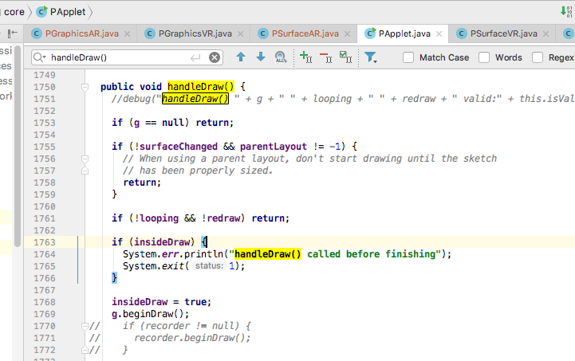
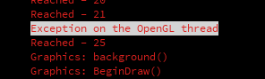
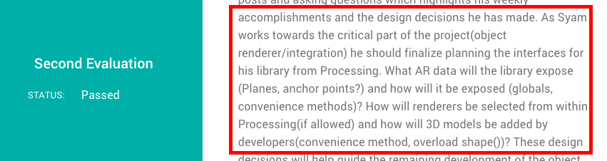
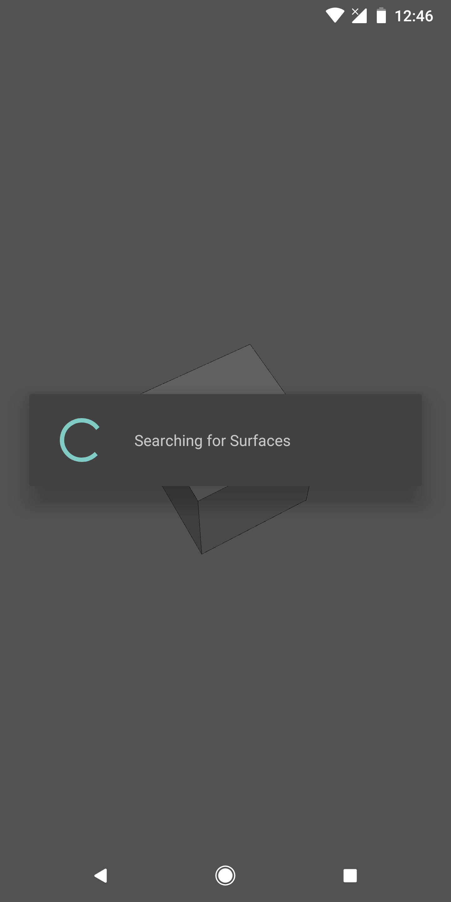
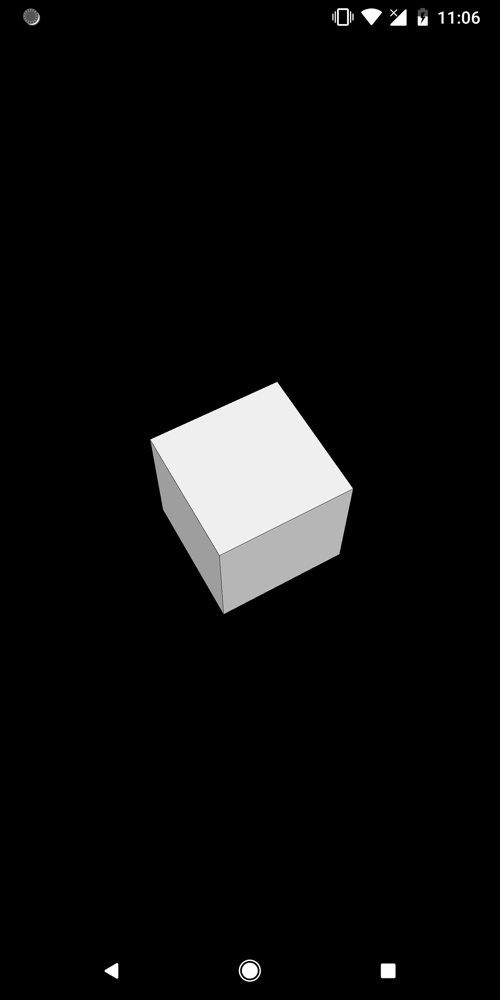
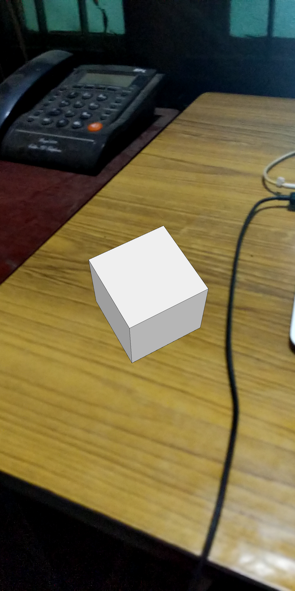
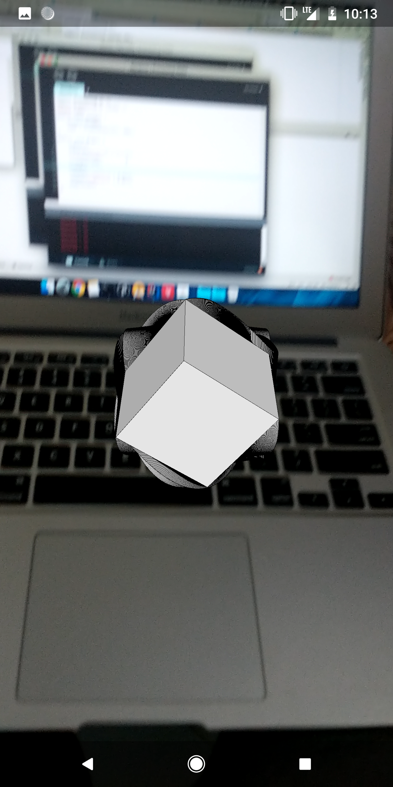
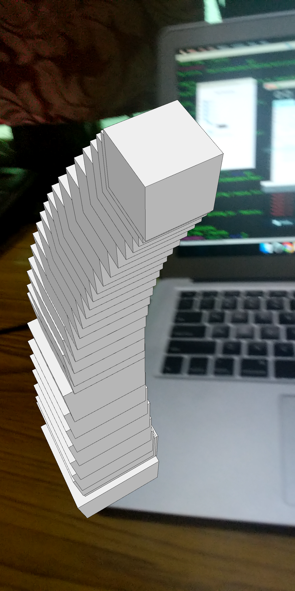
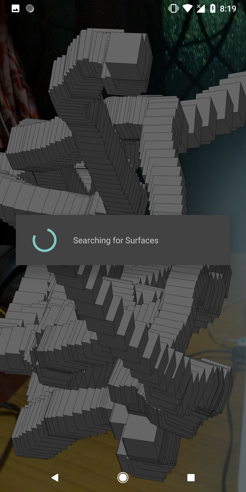

Contributions Week-VI
Hello World.!
This is my weekly report 6 on the AR Library for Processing-Android which is a Library that will help creating Augmented Reality applications using Processing through Android Mode.
On continuation to the previous week which dealt with the Plane renderer and initial stage of the integration phase with the processing core, this week began by building upon the initial integration. There were a number of suggestions given by Andres that were very helpful making this integration possible. We began by having sketch.handleDraw() in onSurfaceChanged() that invokes and gives scope the execution to the statements inside draw() of the sketch. The integration began by doing some primary research on the pre-exsisting methods in the processing core and deciding what would be overriden so that we can obtain the desired renderers functioning as expected.

Initailly, we bagan by overriding the backroundImpl() method which primarly deals with the background of the current running sketch. On the intial stage, I ran into a lot of openGL exceptions and also a couple of common exceptions as well. This took a while in figuring out what went wrong and was cleared later by logging the control flow and finding out where the exceptions actually occured. Calling it's parent method .i.e., super.backgroundImpl() does turn the background and the renderers void when background() is called from the draw() on the sketch. hence, it was avoided.

Evaluation II:
While the bug fixing sessions were going on, we had the results of the Second Evalutaion where in Jesus gave a quite insightful review of the development process that has to be carried out to build a robust renderer which was quite helpful.

This gave me an idea of how to design the documentation and make sure that the methods that AR Library exposes are named in an user understandable manner.
Integration with Processing Core:
The integration phase has a number of conflicts while implementing and some were hard to figure out what their cause were. Following are some of the steps during the integration phase.
- Image (1) - a simple sketch that has sketch.handleDraw() in onSurfaceChanged().
- Image (2) - calling background(0) inside draw() on the sketch.
- Image (3) - handling the draw of PShapes by removing the call to super.backgroundImpl() in the overriden backgroundImpl() method.
  
Though overriding backgroundImpl() helps in clearing the background by the camera image it just takes a snap-shot of the frame when the draw() is invoked for the first time and that frame is kept as the background through out the session .i.e., the frames are not getting updated with the real time camera image in the background dispite calling PBackground.draw(). Also, I cross referenced with a number of class documentations of openGL for Processing http://processing.github.io/processing-javadocs/core/ dispite doing a number of research I wasn't able to arrive at a solution much sooner. I’ve made a number of changes to the code since then but since those doesn’t seem to work as expected I had to rollback my changes. Also using frame.acquireCameraImage() throws an OpenGL exception at certain cases on calling it from onSurfaceChanged()
- Image (1) - leaves back traces of object in the previous frame during rotation
- Image (2) - leaves back it's position of the object from the previous frame during translation
- Image (3) - leaves back traces of it's position and orientation when it's changes with respect to the Model-view prohection values obtained from the current frame.
  
Finally, all these errors were fixed and a semi-stable functioning of the AR Renderer after integration with the Processing core is shown in the following visual, where in the sketch imparts a simple PShape .i.e., a BOX into the AR scene and makes it's transformations based on the MVP matrices obtained from the current frame.
Youtube Link : https://youtu.be/1wE9fXVY7vs
The next phase would be making the plane renderer also integrate with the core and placing these objects on the detected planes.